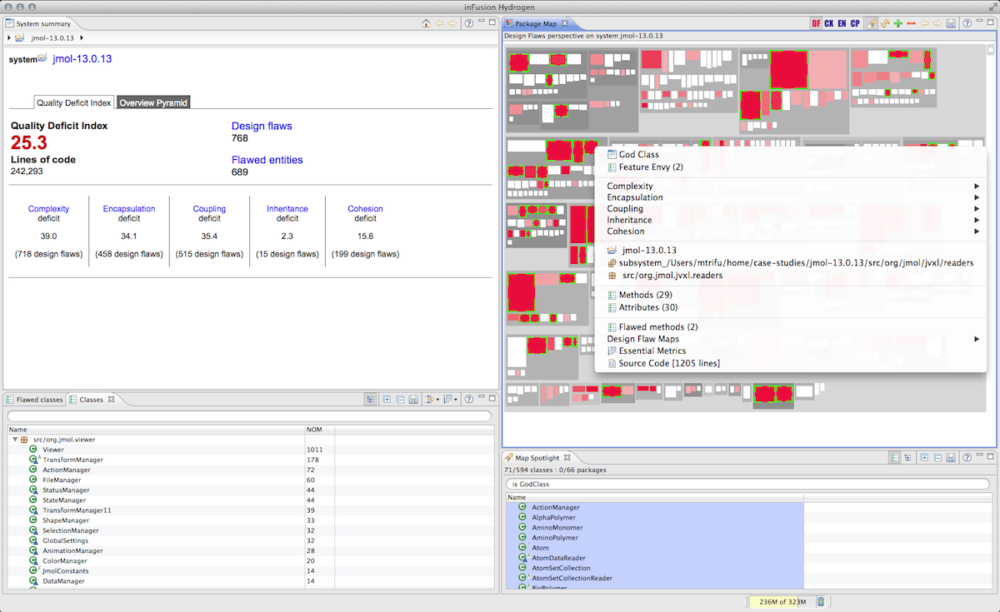

inFusion User Interface
As shown in the figure below, the UI of inFusion is divided
into three areas, each holding a set of specialized Views, displaying
various information about the analized system or certain parts of the
system:
- Summary Area (top-left
part of the window) - displays an overview
of the currently explored design entity and its quality problems. This
entity may be the entire system, one of its subsystems, packages, classes, modules
(procedural part of a C/C++ file), operations, or data. For each of
these entities there is a specialized view, but all of them display
the fully qualified name of the entity. In the example below, we can
see the System Summary for a Java system called jmol-13.0.13,
containing the Quality Deficit Index and its components, the list of the detected design
flaws, the list of flawed entities, and the Overview Pyramid of
metrics
computed for the system. Note that all summary views also display in
the bread crumbs bar located immediately below the view's title, the
navigation path to the explored entity through its containment
hierarchy starting from the System entity.
- Group / Relation Exploration Area
(bottom-left part of the window) - displays groups of entities or
relations between groups of entities. Typical groups of entities are
the group of flawed classes (classes containing design flaws) or the group of all
packages in the system.
The figure below currently shows the group of all classes in the
system, grouped by their containing packages and sorted based on the NOM (Number of Methods) metric. For each
type of displayed entity, there
is a specialized Group Exploration View, and for each type of relation
there is a specialized Relation Exploration View. Most Group
Exploration Views allow the user to apply a filter on the displayed
entities or to add a software metric,
as in the figure below.
- Visual Exploration Area
(right part of the window) - displays visual representations of the
different entities in the form of Polymetric
Maps. The same area is also used for visually exploring the source
code by highlighting relevant code fragments, such as for example the
usage of external attributes in a given class. In the figure
below, we see the Design Flaws Perspective
of the Package Map representing the
entire system. Immediately below the map (bottom-right corner of the
window) there is a little view called the Map
Spotlight, which is used to highlight entities in the map, based on
their properties. In the figure, the Map Spotlight is used to highlight
all the God Classes in the system.

As shown in the figure above right-clicking any entity displayed
throughout the tool, be it in a Polymetric Map, a Group Exploration
View, or a Summary View opens a context-sensitive menu, which allows
the user to:
- Inspect quality problems
- Explore design aspects
- Navigate to other entities
References
Design Flaws, Quality Model, Polymetric Maps, Software Metrics